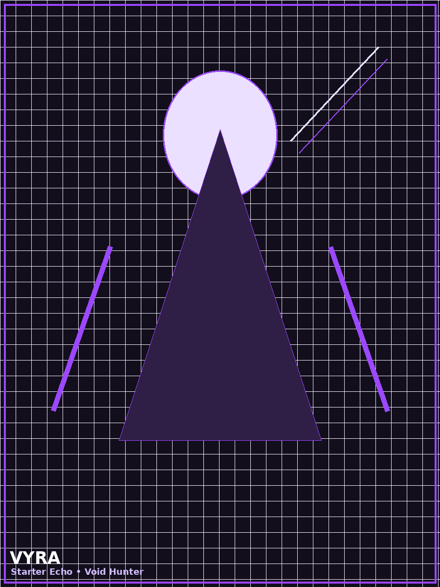
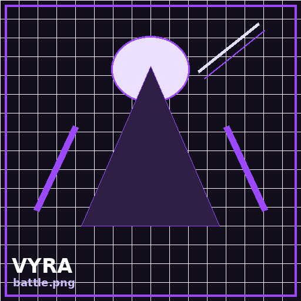

PROJECT:
ASH VECTOR
AVOS UI KIT v0.0.6 // Fracture Engine online
WARNING: Unauthorized access detected.
Can you hear me...?
Reality integrity compromised. Operator access required.

“I don't know who designed this sewer, but I hope they got fired twice.”
assets/operators/vyra/profile.png
assets/operators/vyra/portrait.png
assets/operators/vyra/battle.png
assets/operators/vyra/sprite_sheet.png
assets/operators/vyra/icon.pngChoose an anomaly from the index. Try not to lick the evidence.
Abandoned municipal waste network under a broken neon district. Threats include gel biohazards, scrap vermin, haunted cabling, and one self-appointed sludge monarch.
assets/fractures/fracture001/background.png
assets/fractures/fracture001/minimap.png
assets/fractures/fracture001/tileset.png
data/fractures/fracture001/layout.json
data/fractures/fracture001/events.json
Choose a combat protocol.